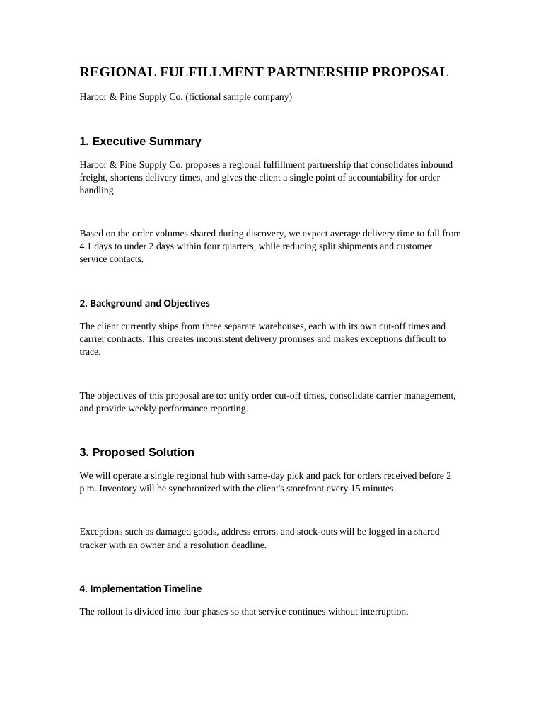
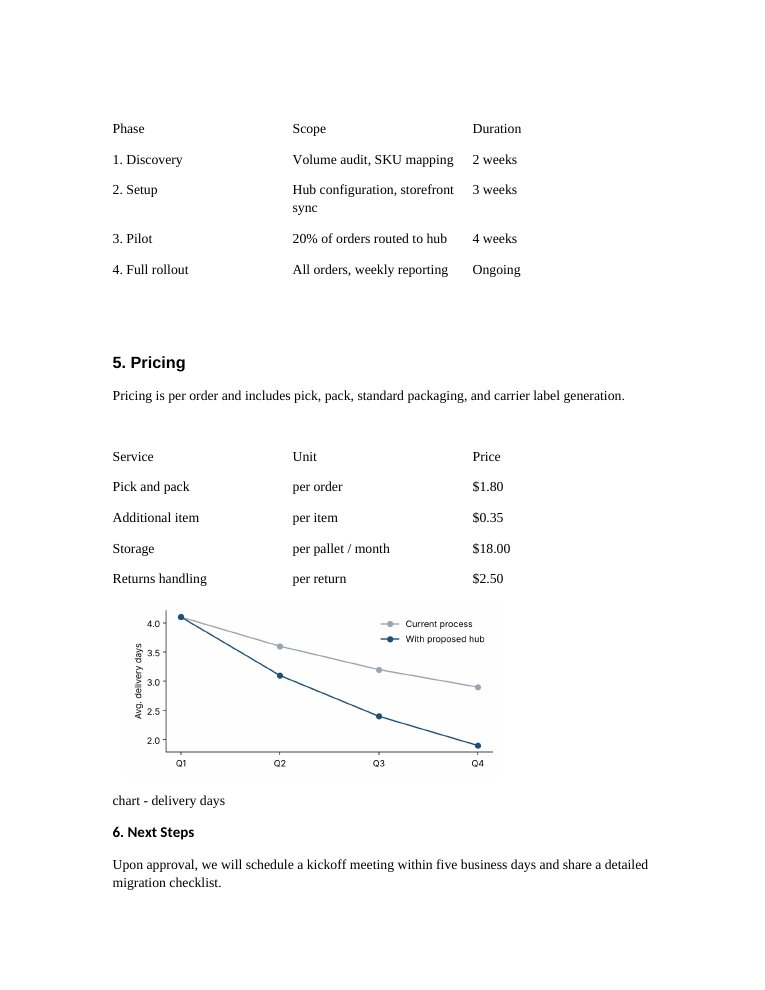
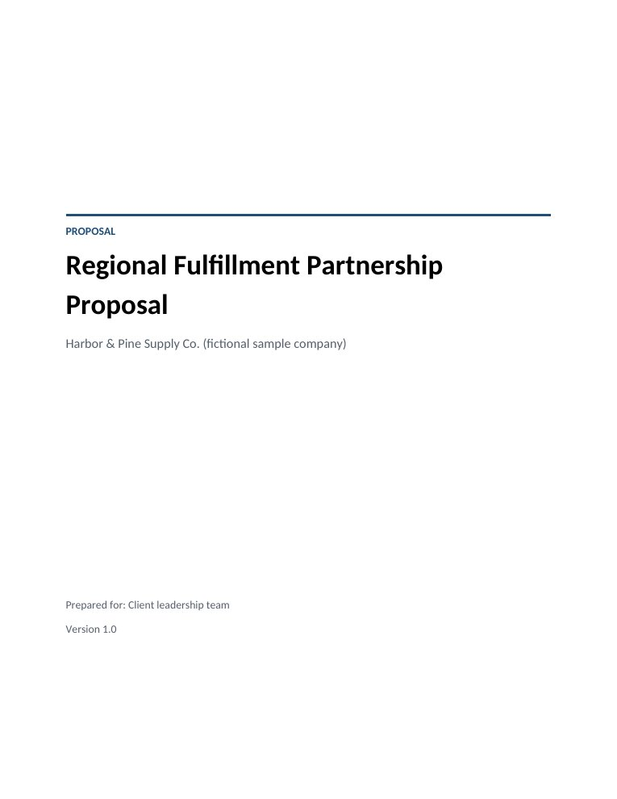
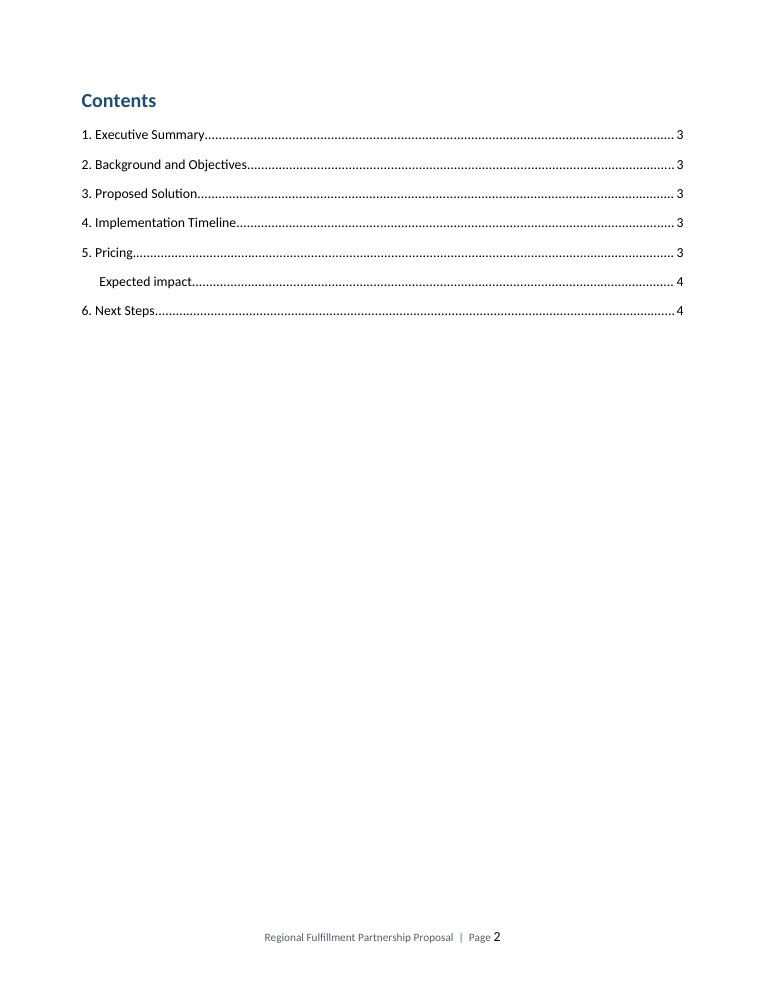
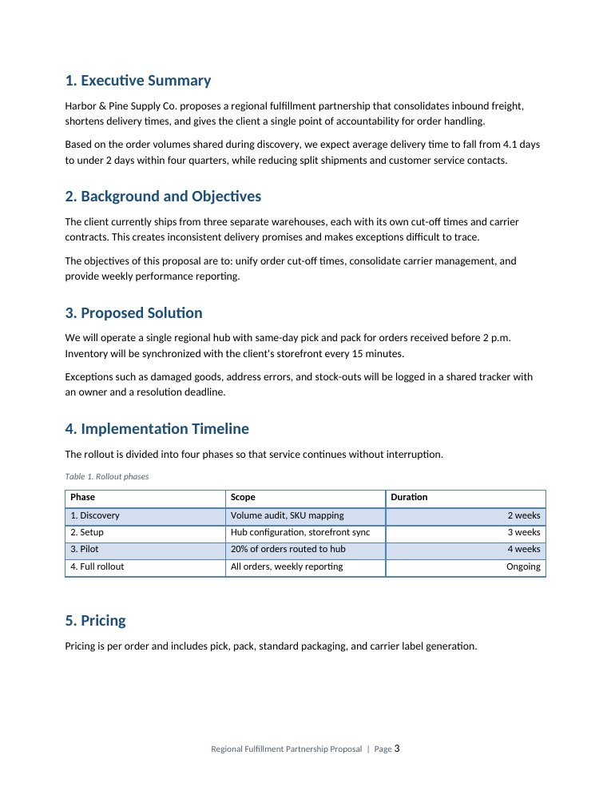
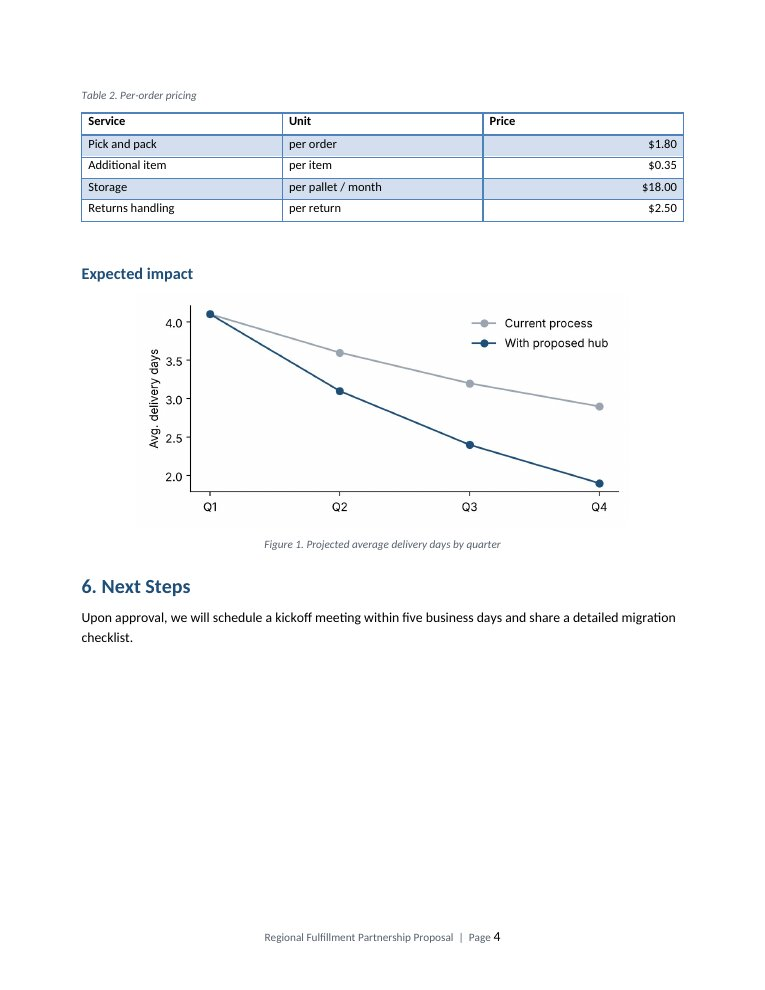

What changed
Each item below uses built-in Word functionality, so the client can keep editing without breaking the layout.
- Branded cover page with no page number
- Table of contents generated from heading styles, updated in one click
- Unified Heading 1 / Heading 2 and body styles: one font, consistent spacing and margins
- Tables styled consistently, numbered captions, prices right-aligned
- Tables and their captions kept on one page, never split
- Chart centred, sized for print, with a numbered figure caption
- Automatic page numbering in the footer
- Stray blank page and empty spacer paragraphs removed
Before
Mixed fonts and heading sizes, manual blank lines for spacing, unstyled tables, an uncaptioned chart and a trailing blank page.


After
Cover page, automatic contents, consistent styles, captioned tables and figure, and page numbers.




Files
Open the Word files to check the styles, contents field and captions yourself.